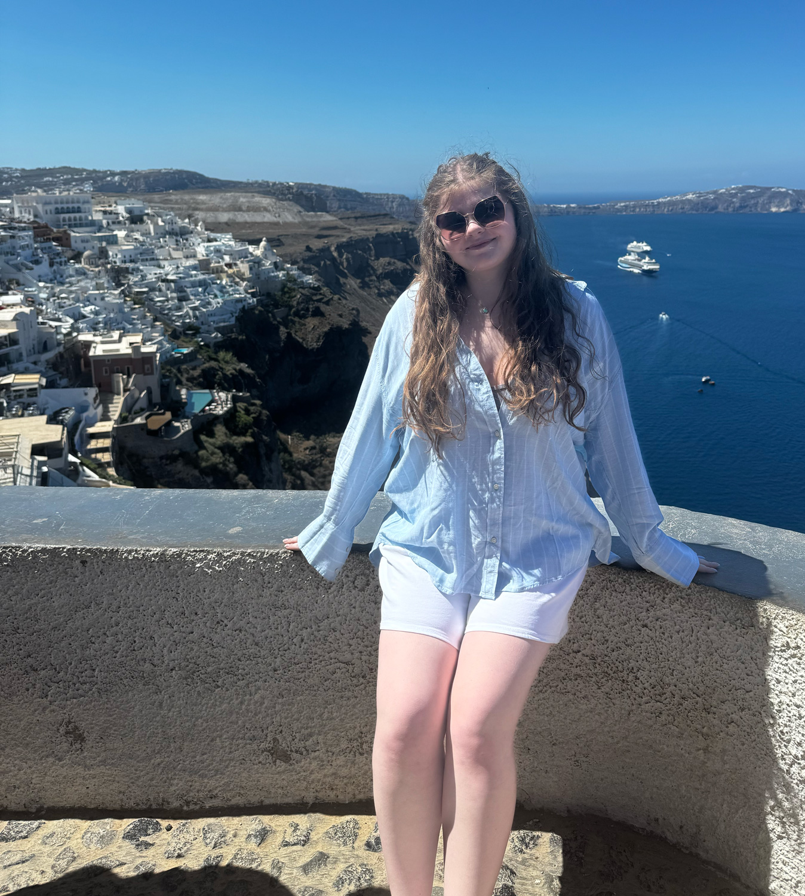

I’m an Interactive Design student at Capilano University with a growing focus on UX/UI and branding. I’m especially interested in how thoughtful design can shape user experience, build trust, and help businesses communicate more effectively.
Before starting my studies, I took a gap year to work full-time at a local bakery. That experience gave me the space to explore my interests and ultimately led me to pursue design. Earlier on, I also started two small businesses, Love For Dogs and Custom Comfort Co., where I gained hands-on experience in branding, product development, and creative problem-solving.
These experiences shaped my interest in supporting small businesses. I’m motivated by the idea that strong design can make a real difference for businesses with limited resources, helping them grow and connect with their audience in meaningful ways.
Through my coursework and personal projects, I’ve developed skills in visual identity, typography, colour theory, and responsive web design. I’m particularly curious about how branding and website design influence user perception, engagement, and trust.
Outside of design, I enjoy working creatively in different ways, including baking, painting, and hands-on projects like woodworking. I’m always looking for opportunities to learn new skills and continue growing as a designer.